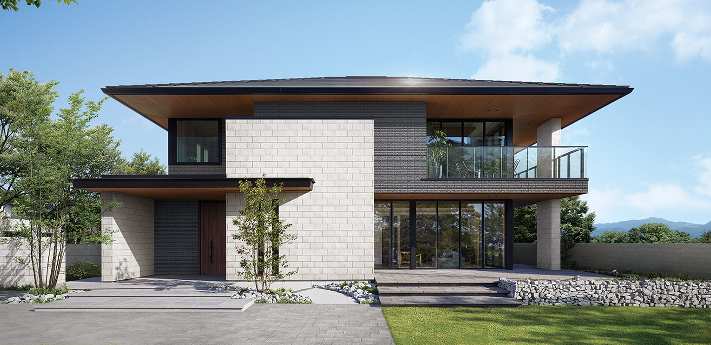
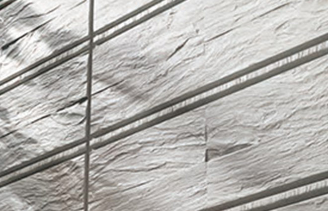
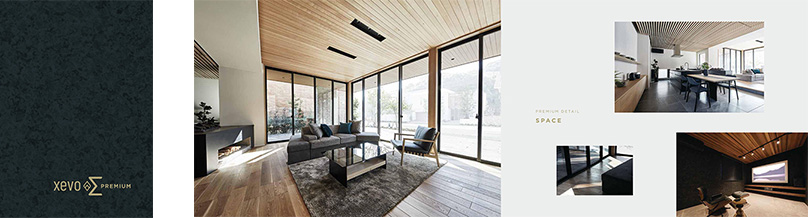
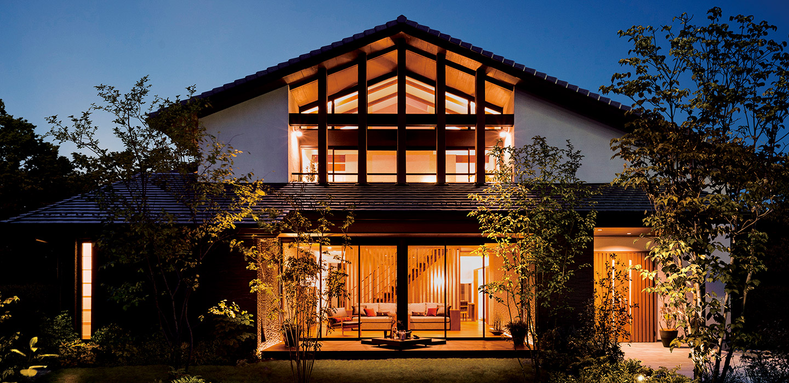
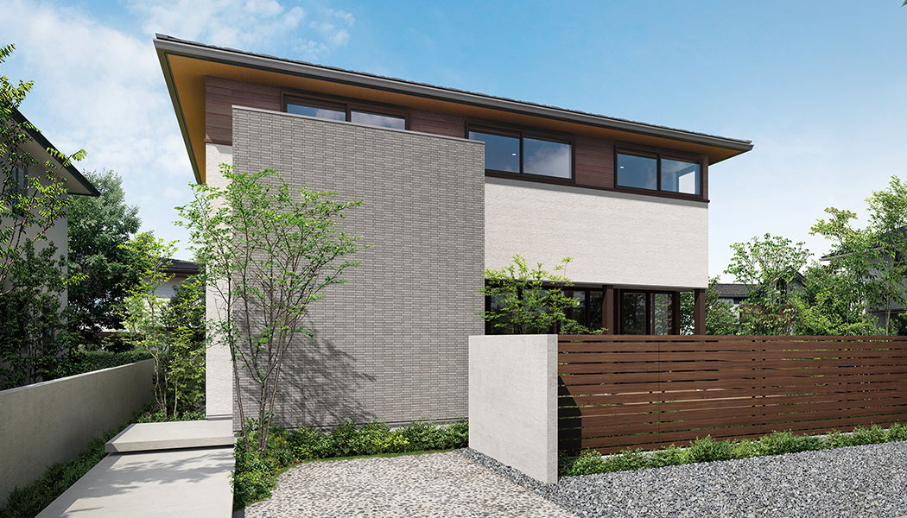
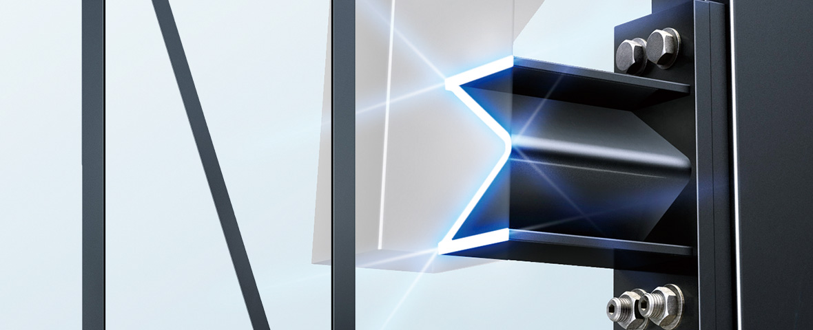
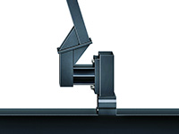
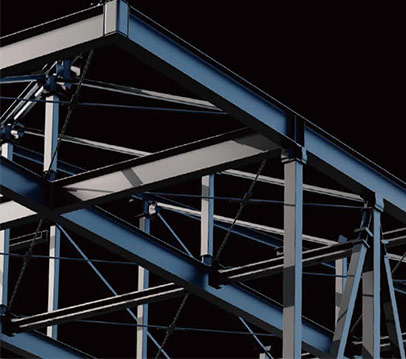
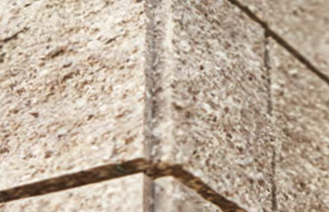

① 会社・基本データ

大和ハウス工業は1955年創業、工業化住宅の先駆者として知られる総合デベロッパー。戸建住宅だけでなく、賃貸住宅・商業施設・事業施設・マンション・海外事業まで手がけ、連結売上5兆4,348億円（2025年3月期）という住宅業界最大級の財務規模を誇る。
| 項目 | 内容 |
|---|---|
| 会社名 | 大和ハウス工業株式会社（DAIWA HOUSE INDUSTRY CO., LTD.） |
| 創業 | 1955年4月5日（石橋信夫がパイプハウスで工業化住宅を創業） |
| 本社 | 大阪府大阪市北区梅田三丁目3番5号 大和ハウス大阪ビル |
| 東京本社 | 東京都千代田区飯田橋3-13-1 |
| 資本金 | 約1,622億円（2025年3月末時点） |
| 連結売上高 | 5兆4,348億円（2025年3月期／過去最高を更新） |
| 連結営業利益 | 5,462億円（2025年3月期） |
| 戸建住宅事業売上 | 1兆1,445億円（2024年度／初の1兆円突破・前期比+20.3%） |
| 従業員数 | 単体 約16,200名／連結 約50,400名（2025年3月末） |
| 年間戸建販売戸数 | 約5,067戸（2024年度） |
| 対応エリア | 沖縄県を除く全国（全国約400支店・営業所） |
| 上場 | 東証プライム（1925） |
一言で言うと？
「工業化住宅の先駆者。鉄骨ラーメン構造による大開口・大空間と、総合デベロッパーゆえの財務安定性が強み」。創業70年を超える老舗で、総合不動産事業での存在感は群を抜く。戸建単独の販売棟数では積水ハウス・一条工務店に譲るが、総販売戸数（戸建＋マンション＋賃貸）は10年連続業界首位。
事業セグメント
大和ハウスは総合デベロッパー（賃貸住宅・商業施設・事業施設・マンション・海外事業を含む）で、戸建住宅事業は2024年度に初の1兆円突破（1兆1,445億円）。グループ売上5.4兆円に占める比率は約2割強。戸建単独販売戸数では積水ハウスが首位で、大和ハウスは5,067戸（2024年度）。ただし総販売戸数では10年連続1位で、総合力・財務基盤は住宅業界最大級。
② 商品ラインナップと坪単価（2026年最新）




出典: 大和ハウス工業公式サイト
注文住宅（フルオーダー・鉄骨造）
| 商品名 | 坪単価目安（2026年） | 構法 | 主な特徴 |
|---|---|---|---|
| xevoΣ PREMIUM | 140〜170万円 | 軽量鉄骨ラーメン | 最上級。標準天井高2m72cm＋1階最大3m16cm対応・大開口・断熱最高仕様 |
| xevoΣ | 100〜130万円 | 軽量鉄骨ラーメン | 主力商品。D-NΣQST標準。天井高2m72cm |
| xevoM3 | 128〜150万円 | 軽量鉄骨3階建 | 都市型3階建。狭小地対応 |
| skye3 | 120〜150万円 | 重量鉄骨3階建 | 多層階・二世帯・賃貸併用に強い |
注文住宅（フルオーダー・木造）
| 商品名 | 坪単価目安（2026年） | 構法 | 主な特徴 |
|---|---|---|---|
| xevoGranWood | 100〜150万円 | 木造軸組（国産杉集成材） | 木造最上位。最大開口9m。ウルトラW断熱で等級7対応 |
| xevoGranWood -平暮らし- | 95〜130万円 | 木造軸組（平屋専用） | 平屋特化プラン |
| xevoGranWood -都市暮らし- | 120〜160万円 | 木造軸組（3〜5階建て） | 多層階木造 |
| xevoBeWood | 95〜120万円 | 木造軸組（尺モジュール） | 2025年強化。コスト抑えめの木造新ライン |
規格住宅・セミオーダー／富裕層ライン
| 商品名 | 坪単価目安 | 主な特徴 |
|---|---|---|
| Smart Made Housing | 70〜90万円 | 現行規格住宅ブランド（スマートセレクション／スマートデザインを統合）。Lifegenic後継 |
| MARE-希-（マレ） | 165〜250万円以上 | 木造×RC造ハイブリッド。富裕層向け最高級。設計料別 |
坪単価の推移（xevoΣ基準）
| 年 | 坪単価目安 | 備考 |
|---|---|---|
| 2019年 | 約78〜90万円 | xevoΣ 2018年リニューアル後 |
| 2022年 | 約85〜100万円 | ウッドショック・資材高騰 |
| 2024年 | 約95〜115万円 | 断熱等級6対応準備 |
| 2025年7月 | 約100〜120万円 | 断熱等級6標準化 |
| 2026年 | 約100〜130万円 | GX ZEH対応で+10%前後 |
注文住宅の平均坪単価（2026年実績データ）
| 調査 | 平均坪単価 |
|---|---|
| 不動産メディア調査（2026年） | 116.1万円 |
| 実建築者アンケート調査 | 80.4万円 |
| 住宅情報サイト集計 | 90〜120万円 |
ARCHIST視点：ダイワハウスは「表示坪単価」と「実際の契約額」の乖離が大きいメーカーの代表例。カタログ上の坪単価80万円台でも、オプションを積むと実勢で100〜120万円台になるケースが多数。見積もり時は「総額」で必ず確認すること。
③ 構造・耐震性能
主力構法：軽量鉄骨ラーメン構造（xevoΣ）
| 項目 | 詳細 |
|---|---|
| 工法 | 軽量鉄骨ラーメン構造（柱・梁一体型） |
| 柱・梁接合 | 鋼板補強＋特殊高力ボルト |
| 耐震等級 | 全商品：耐震等級3（最高等級）標準 |
| 独自技術 | D-NΣQST（ディーネクスト）エネルギー吸収型耐力壁 |
| 外壁 | 外張り断熱通気外壁（DXウォール）。構造と断熱を独立 |
D-NΣQST（ディーネクスト）の仕組み

ダイワハウス独自のエネルギー吸収型耐力壁。「Σ（シグマ）型デバイス」という特殊形状の金属部材が、地震時に上下へ柔軟に変形することで地震エネルギーを熱に変換して吸収する。
- 一般的な筋交い・耐力壁は「地震に耐える」発想 → 繰り返し地震で劣化しやすい
- D-NΣQSTは「地震エネルギーを吸収して逃がす」発想 → 繰り返し地震後も耐力を維持
- Σ型の独特な断面が、強さと柔軟性を両立（弾性域と塑性域の両面で機能）
- 特殊鋼材・希少材料不要で、再現性・コスト性も担保
実大振動実験の実績

| 実験項目 | 内容 |
|---|---|
| 加振回数 | 175kine（阪神・淡路大震災の約1.3倍相当、震度7級）を4回連続加振 |
| 結果 | xevoΣは変位量増大が軽微。柱・梁に損傷なし。新築時の耐震性能を維持 |
| 東日本大震災後追加試験 | 住宅用E-ディフェンス実験を複数回。構造被害報告なし |
| 型式適合認定 | 国土交通大臣認定取得（鉄骨）。木造は非認定で設計自由度が高い |
基礎
- 高強度コンクリート＋高密度配筋のベタ基礎
- 一体打ち工法で継ぎ目を極小化（水・シロアリ侵入経路を低減）
- 基礎コンクリート強度30N/mm²発注（一般的には24N/mm²）→ 100年耐久性を目指した設計
木造：xevoGranWood の構法
- 在来軸組＋パネル併用の木造ラーメン構造
- 国産杉集成材を主構造材に使用
- 最大開口9m。木造ながら大開口リビングが可能
- メーターモジュール設計（xevoBeWoodは尺モジュール）
鉄骨造のメリット・デメリット（正直に）
鉄骨造のメリット
- 経年での膨張・収縮が木材より少ない
- 大開口・大空間の設計が可能（xevoΣの天井高2m72cmは木造では困難）
- 狭小地・変形地に強い
- シロアリ被害が構造材に及びにくい
鉄骨造のデメリット
- 断熱性能は木造より不利（鉄は熱伝導率が木の約400倍）→ 熱橋対策が必須
- 坪単価が木造より10〜20%高くなりやすい
- 気密施工の難易度が高い（C値が取りづらい）
- 遮音性能は木造と同等か若干劣る場合あり
- 固定資産税評価額が木造より高くなる傾向
④ 断熱性能
UA値と断熱等級（2026年標準）
| 商品 | 断熱等級 | UA値目安 | 備考 |
|---|---|---|---|
| xevoΣ PREMIUM | 等級6標準／等級7対応可 | 0.34〜0.40 | エクストラ断熱仕様で等級7到達 |
| xevoΣ（標準） | 等級6（標準） | 0.40〜0.46 | 2025年7月より等級6標準化 |
| xevoΣ 北海道仕様 | 等級7対応 | 0.28〜0.34 | 寒冷地エクストラ断熱 |
| xevoGranWood（標準） | 等級5〜6 | 0.46〜0.50 | 遮熱外張り断熱工法 |
| xevoGranWood ウルトラW断熱 | 等級7対応 | 0.26〜0.30 | 木造最上位仕様 |
| xevoBeWood | 等級5〜6 | 0.50前後 | 部分強化で天井・床下プレミアム可 |
| Smart Made Housing | 等級5〜6 | 0.50〜0.60 | 規格型は断熱控えめ |
外張り断熱通気外壁（DXウォール）の構造
ダイワハウスの鉄骨造は「構造と断熱を分離する」独自思想。
| 部位 | 断熱材 | 厚さ |
|---|---|---|
| 外壁（外張り層） | 高密度グラスウールボード | 外張り |
| 外壁（パネル内） | 高性能グラスウール | パネル内充填 |
| 内壁 | 高性能グラスウール | 内張り |
| 熱橋補強 | 柱前面の高性能グラスウール | 鉄骨の熱橋カット |
合計断熱層：約132mm（標準）／エクストラ仕様はさらに増厚。
窓の仕様（2026年標準）
| 項目 | スペック |
|---|---|
| 標準サッシ | 樹脂アルミ複合サッシ＋Low-E複層ガラス |
| エクストラ仕様 | オール樹脂サッシ＋トリプルLow-Eガラス |
| 寒冷地仕様 | 樹脂トリプルガラス標準 |
他社との断熱性能比較
| メーカー | UA値（代表値） | 断熱等級 | C値全棟測定 |
|---|---|---|---|
| 一条工務店（i-smart） | 0.25 | 等級7 | 全棟実施（0.59） |
| タマホーム（笑顔の家） | 0.23 | 等級7 | 非公表 |
| ダイワハウス（xevoΣ標準） | 0.40〜0.46 | 等級6 | 非公表 |
| ダイワハウス（xevoGranWood ウルトラW） | 0.26〜0.30 | 等級7 | 非公表 |
| 住友林業 | 0.46 | 等級5 | 非公表 |
| 積水ハウス（木造） | 0.46〜0.60 | 等級5 | 非公表 |
| ヘーベルハウス | 0.55〜0.60 | 等級5 | 非公表 |
| 三井ホーム | 0.43 | 等級5〜6 | 非公表 |
正直な評価：大手鉄骨HMの中では断熱等級6標準化（2025年7月）で底上げされたが、気密性能は木造高気密メーカー（一条・アイ工務店）には届かない。「断熱等級6＝高断熱」だが、気密性能まで含めると中位。
⑤ 気密性能
C値について
| 項目 | 内容 |
|---|---|
| 公式C値 | 非公表 |
| 全棟測定 | 実施していない |
| 推定実測値 | 1.0〜2.0 cm²/m²（施工条件・担当職人で差） |
鉄骨造の気密の難しさ
鉄骨造は構造上、以下の理由でC値が木造より取りづらい。
- 鉄骨柱・梁と外壁パネルの接合部に隙間が出やすい
- 鉄は熱膨張率が木より大きく、季節で隙間が変動
- 気密テープ・気密シートの施工箇所が木造より多く、職人スキルに左右
C値を公表しないHMは基本「気密が弱み」と考えてよい。ダイワハウスも例外ではない。一条工務店レベル（C値0.1〜0.6）の気密性を求める方には向かない。ただし、断熱等級6＋第1種換気の組み合わせなら、実用上の快適性は十分確保できる。
気密を重視するなら
- 木造xevoGranWoodを選び、気密測定を個別依頼する
- 担当設計士に「気密測定の実測値を引渡前に出してほしい」と明示
- ARCHISTの第三者チェックで施工時の気密施工を確認
⑥ 換気・空調
24時間換気（標準装備）
- 第1種熱交換換気システム（商品・グレードで方式が異なる）
- 花粉・PM2.5対応フィルター搭載モデルあり
- 法定義務の24時間換気はどの商品でも標準
全館空調「エアヒーリング」「あんしん空気の家」（オプション）
| 項目 | スペック |
|---|---|
| 方式 | 全館空調＋熱交換換気一体型（エアヒーリングが住宅用現行ブランド） |
| 導入費用 | 約150〜250万円（規模による） |
| ランニングコスト | 一般エアコンより月2,000〜5,000円程度高い |
| 特徴 | 全館を一定温度に保つ。24時間連続稼働前提 |
※「D's SMART」は事業用（オフィス等）のブランド名で、住宅用全館空調ではない。住宅用はエアヒーリング（xevoΣ系で展開）／あんしん空気の家が現行製品名。
全館床暖房について
- 床暖房は標準ではない（オプション設定）
- 一条工務店の「全館床暖房標準」に対する明確な差別化ポイント
- 採用率は低め（採用する場合はLDKのみ部分設置が多い）
冷暖房の設計思想
ダイワハウスは「全館空調or個別エアコン」を選ばせる方針。標準は個別エアコン前提の設計で、全館空調は高単価オプション。寒冷地でも全館床暖房を入れるには追加100万円超の覚悟が必要。
⑦ デザイン・設計自由度

xevoΣ 大開口リビング

xevoΣ モダン外観
出典: 大和ハウス工業公式サイト（xevoΣ ギャラリー）
強み：鉄骨ラーメン構造による大空間・大開口
- xevoΣ標準天井高：2m72cm（一般的な住宅は2m40cm）
- xevoΣシリーズ天井高：2m40／2m72／2m80／3m08／1階最大3m16cm（PREMIUMはオプション対応）
- xevoΣ PREMIUMは「2m72cmを標準とした高天井＋全面開口」が公式訴求。3m16cmは1階限定のオプション
- 大開口幅：最大7m10cm（xevoΣ）／9m（xevoGranWood）
- ラーメン構造のため、内部に柱・耐力壁の制約が少ない
- 吹き抜け・勾配天井・スキップフロアが設計しやすい
インテリアコーディネーター（IC）の提案力
- 業界内でもICの質は高評価
- 社内研修制度が整備され、提案品質の均質化を図っている
弱み・注意点
標準仕様のシンプルさ
- カタログ上の標準仕様はシンプル目で、デザイン性を高めるにはオプションが前提
- 「カタログ写真」レベルの内装にするには+300〜500万円のオプションが必要なケースも
- キッチン・バスは他社製採用（LIXIL・TOTO・Panasonic等）のため選択肢は豊富だが、自社開発の一条工務店のような「性能最適化」は薄い
型式適合認定の制約（鉄骨）
- xevoΣは型式適合認定住宅のため、間取り・窓位置に一定の制約あり
- 大幅な個別設計には構造計算の再認定が必要で、時間・コスト増
- 木造（xevoGranWood/xevoBeWood）は型式非認定のため自由度が高い
デザインが重視の方へ
- 洋風・曲線・吹き抜けを多用した邸宅風 → 三井ホームの方が得意
- 和モダン・木の温もり → 住友林業・xevoGranWoodの両方検討を
- モダン・シンプル・大開口 → ダイワハウス xevoΣは有力候補
⑧ 保証・メンテナンス（2026年最新）
基本保証体系
| 保証項目 | 初期保証期間 | 条件・備考 |
|---|---|---|
| 構造躯体 | 初期30年 | 点検受検＋必要な有償メンテ実施が条件 |
| 雨水の侵入防止 | 初期15年（→ 延長で30年） | 同上 |
| シロアリ予防 | 10年ごと再処理 | 有償再処理で延長 |
| 住宅設備 | 10年（業界標準5年より長い） | 主要設備（給湯器・換気扇等） |
| 最長延長保証 | 最長60年 | 15年ごとに有償メンテ工事を実施 |
定期点検スケジュール
引渡し後：1か月 → 1年 → 2年 → 5年 → 10年 → 15年 → 20年 → 25年 → 30年（以降5年ごと）
- 初期保証期間内の点検受検が保証継続の条件
- 点検は無償、ただし補修・メンテ工事は有償
- 30年目以降は有償点検に切り替わる
初期保証30年の「中身」
注意：「30年間すべて無償」ではない。
- 10年目：防水関連の有償メンテ工事が必須（実施しないと15年以降の雨水保証が切れる）
- 20年目：構造関連の有償メンテ工事が必要な場合あり
- 30年目：大規模なメンテ工事（屋根・外壁塗装・防水再施工など）で数十万〜数百万円
他社との保証比較
| メーカー | 初期保証（構造） | 最長延長 | 住宅設備保証 | シロアリ |
|---|---|---|---|---|
| ダイワハウス | 30年 | 60年 | 10年（業界最長クラス） | 10年ごと有償 |
| 積水ハウス | 30年 | 永年（ユートラスシステム） | 10年 | 10年ごと有償 |
| ヘーベルハウス | 30年 | 60年 | 5年 | 20年保証（独自） |
| 住友林業 | 30年 | 60年 | 5年 | 10年ごと有償 |
| 一条工務店 | 30年 | 30年 | 5〜10年 | 10年・20年目無償 |
| 三井ホーム | 10年 | 60年 | 5年 | 10年ごと有償 |
- 住宅設備保証10年は業界最長クラス（業界平均5年）
- 最長60年保証は業界水準。積水ハウスの「永年」には及ばない
- シロアリ予防は有償（一条の10年・20年目無償とは差）
⑨ 工期・建築期間
各フェーズの期間
| フェーズ | 期間目安 |
|---|---|
| 展示場見学〜仮契約 | 1〜3ヶ月 |
| 仮契約〜本契約（間取り打合せ） | 3〜6ヶ月 |
| 本契約〜着工（詳細設計・確認申請） | 2〜3ヶ月 |
| 着工〜上棟 | 1ヶ月 |
| 上棟〜引渡し | 3〜5ヶ月 |
| 合計（初回来場〜引渡し） | 10〜17ヶ月 |
| 着工〜引渡し | 4〜6ヶ月 |
工場生産比率
- 鉄骨フレーム・外壁パネルは奈良工場等で生産
- 現場では組立中心で、工期遅延は他メーカーより少ない傾向
- 天候影響を受けにくく、安定した品質
- ただし資材不足・職人不足期は2〜3ヶ月の遅延事例あり
工期短縮策
- Smart Made Housing（規格型／旧Lifegenic後継）：打合せ期間を大幅短縮。最短8ヶ月で引渡し可能
- スマートセレクション／スマートデザイン：同様に短縮可能
⑩ ターゲット客層
典型的な施主プロファイル
| 属性 | 傾向 |
|---|---|
| 年齢 | 35〜49歳が中心 |
| 世帯年収 | 800〜1,200万円がボリュームゾーン |
| 最低年収目安 | 700万円〜（Smart Made Housing・規格型なら500万円〜） |
| 土地購入込み目安 | 世帯年収1,500〜2,000万円（都市部） |
| 価値観 | 大手ブランドの安心感、設計自由度、耐震性を重視 |
| 情報収集 | 展示場での体験重視。SNS比較は一条工務店施主ほど徹底しない傾向 |
ダイワハウスを選ぶ理由TOP3
- 大手ブランドの安心感（総合デベロッパーとしての財務基盤）
- 設計自由度・大空間（鉄骨ラーメン構造で大開口・天井高）
- 耐震性能（D-NΣQSTの繰り返し地震対応）
施主の特徴
- 「安心感」「提案力」「設計自由度」を重視する合理派
- 一条工務店施主ほど数値（UA値・C値）にこだわらない
- 子育て世代（二世帯含む）・多層階狭小地ニーズが多い
- 営業担当・設計士との相性を重視
⑪ 他社比較表（6社比較）
| 項目 | ダイワハウス | 積水ハウス | ヘーベル | 住友林業 | 一条工務店 | 三井ホーム |
|---|---|---|---|---|---|---|
| 主構造 | 鉄骨・木造 | 鉄骨・木造 | 重量鉄骨＋ALC | 木造BF構法 | 木造2×6 | 木造2×6 |
| 坪単価 | 100〜130万 | 100〜150万 | 100〜130万 | 100〜130万 | 85〜105万 | 100〜130万 |
| UA値（代表） | 0.40〜0.46 | 0.46〜0.60 | 0.55〜0.60 | 0.46 | 0.25 | 0.43 |
| C値 | 非公表 | 非公表 | 非公表 | 非公表 | 0.59（全棟） | 非公表 |
| 断熱等級 | 6（標準）／7対応 | 5〜6 | 5 | 5〜6 | 7（標準） | 5〜6 |
| 耐震等級 | 3 | 3 | 3 | 3 | 3 | 3 |
| エネルギー吸収 | D-NΣQST | シーカス | オイルダンパー | マルチバランス | 2×6モノコック | BF構法 |
| 設計自由度 | ◎ | ◎ | ○ | ◎ | △ | ○ |
| 全館床暖房 | オプション | オプション | なし | オプション | 標準 | オプション |
| 初期保証（構造） | 30年 | 30年 | 30年 | 30年 | 30年 | 10年 |
| 最長延長保証 | 60年 | 永年 | 60年 | 60年 | 30年 | 60年 |
| 住宅設備保証 | 10年 | 10年 | 5年 | 5年 | 5〜10年 | 5年 |
各社との比較のポイント
ダイワハウス vs 積水ハウス
ダイワはD-NΣQST（エネルギー吸収）、積水はシーカス（制震ダンパー）。ブランド力・永年保証重視なら積水、大開口・天井高・木造xevoGranWoodに魅力を感じるならダイワ。
ダイワハウス vs ヘーベルハウス
ヘーベルは重量鉄骨＋ALCコンクリート外壁で耐火性・業界最高クラス。ダイワは軽量鉄骨ラーメンで大開口・断熱等級6。都市部狭小地・耐火最優先ならヘーベル、大空間・コストと耐震のバランスならダイワ。
ダイワハウス vs 住友林業
ダイワは軽量鉄骨（xevoΣ）が主力、住友林業は木造BF構法。木の温もり・無垢材・自然素材なら住友林業、鉄骨の剛性と大開口ならダイワ。住友林業のきこりん税（建築総額の5〜7%程度）に注意。
ダイワハウス vs 一条工務店
一条は断熱等級7／C値0.59全棟実測／全館床暖房標準で性能特化。ダイワは設計自由度・大空間・ブランドで勝負。値引きはダイワに交渉余地あり、一条は原則不可（定価販売）。
ダイワハウス vs 三井ホーム
三井は洋風邸宅・曲線・吹抜け・スマートブリーズが強み。ダイワはモダン・シンプル・大開口で勝負。初期保証はダイワ30年 vs 三井10年で差が大きい。
⑫ よくある後悔・失敗事例
後悔1：オプション費用が想定以上に膨らんだ
「坪単価95万円の見積もりから、契約確定時には130万円を超えていた」。外壁タイル・外張り断熱エクストラ・大開口窓・全館空調などで軽く500万円超のオプション積上げ事例多数。カタログ価格と実勢価格の乖離が大きい。
対策：契約前に「この仕様でオプションになる項目を全て出してほしい」と書面で依頼。概算ではなく詳細見積で確認。
後悔2：営業所・担当者によって対応に大きな差
「隣県の営業所の設計士は提案力が高かったが、自分の担当は定型提案ばかりだった」「営業担当が途中で異動し、引継ぎが不十分で仕様が変わった」「施工品質にバラつきがあり、クレーム対応も営業所次第」。みん評・アメブロでも営業トラブルの投稿が多数。
対策：複数の営業所で話を聞く。合わない担当者は即変更依頼。複数回の打合せ議事録を必ず共有してもらう。
後悔3：鉄骨偏重の営業で木造の選択肢が埋もれた
「木造xevoGranWoodも検討したかったが、営業が鉄骨のxevoΣばかり推してきた」。2025年から本社に木造専門窓口が開設され、鉄骨偏重是正の体制が整備された。木造検討時に鉄骨へ誘導される場合はこの窓口の活用を要求できる。
対策：事前に「木造と鉄骨両方の見積と提案が欲しい」と明示する。
後悔4：洗面脱衣所・廊下が冬寒い
「LDKはあたたかいが、洗面脱衣所・廊下が冬場ひんやりする」。鉄骨造の断熱構造上、部分的な熱橋が残る。ヒートショックリスクも指摘されている。
対策：エクストラ断熱仕様・全館空調・木造xevoGranWood ウルトラW断熱のいずれかを選択。洗面脱衣所に浴室暖房+脱衣所暖房の個別対策も有効。
後悔5：過去の型式不適合問題・営業停止処分への不安
2019年4月12日発表：型式適合認定を受けた型式と異なる仕様の住宅を供給していたことが発覚。当初2,078棟→2019年6月時点で約3,975棟に拡大。構造耐力上の問題はなく、是正対応済みだが、型式適合認定制度への信頼を損ねた事例。
2021年11月17日（別件）：国交省近畿地方整備局から営業停止処分。内容は施工管理技士の実務経験不備（社員349名）で、型式不適合とは別事案。
対策：契約前に型式適合認定の内容を確認し、仕様書との整合性を書面で受ける。
後悔6：雨漏り・施工トラブル報告
「施工中にボルトの締め忘れが後から発覚した」「バルコニー防水の施工不良で雨漏りが発生」。アフターサービスの対応スピード・丁寧さに地域差の声。
対策：施工中の第三者チェック（ホームインスペクション）を並行実施。引渡前に気になる箇所は必ず指摘・書面化。
後悔7：全館空調・床暖房の標準不足
「一条工務店を見学した後にダイワハウスを見たら、全館床暖房がオプションで驚いた」。エアヒーリング（全館空調）導入で150〜250万円。維持費も月+2,000〜5,000円。
対策：快適性とコストを天秤に。標準の個別エアコン＋高断熱でも十分快適というOB声もあり。
後悔8：固定資産税が高め
軽量鉄骨造は木造より固定資産税評価額が高くなる傾向。30坪xevoΣで固定資産税は年8〜12万円（新築減税期間後）。木造同規模より年1〜3万円高い。
対策：固定資産税を含めた総コストで検討。新築減税（3年または5年半額）を理解した上で予算組み。
⑬ 顧客満足度データ・坪数別建築総額
オリコン顧客満足度ランキング（注文住宅）
| 年度 | 順位 | 総合スコア |
|---|---|---|
| 2024年 | 総合8位 | 76.2点 |
| 2025年 | 総合9位 | 76.3点 |
| 2026年 | 総合9位 | 76.5点 |
参考（2026年総合ランキング）：1位 スウェーデンハウス 81.0点（12年連続1位）／2位 ヘーベルハウス 78.9点／3位 住友林業 78.7点／4位 積水ハウス 78.3点／5位 一条工務店 77.6点／6位 パナソニックホームズ 77.2点／7位 セキスイハイム 77.1点／8位 三井ホーム 76.6点／9位 大和ハウス 76.5点／10位 ミサワホーム 76.2点。
2026年 項目別評価（抜粋）
| 項目 | 順位 | スコア |
|---|---|---|
| 家の性能 | 9位 | 80.2点 |
| アフターサービス | 6位 | 77.8点 |
| 保証内容 | 7位 | 77.3点 |
| 施工担当者の対応 | 8位 | 77.5点 |
| モデルハウス | — | 78.5点 |
| 営業担当者の対応 | 8位 | 76.9点 |
| デザイン | 8位 | 76.5点 |
| 設計担当者の対応 | 9位 | 75.9点 |
| 情報の分かりやすさ | 9位 | 73.3点 |
| 価格の説明 | — | 73.8点 |
地域別評価
| 地域 | スコア | 順位 |
|---|---|---|
| 九州・沖縄（最高） | 78.6点 | 5位 |
| 北関東 | — | 4位 |
| 近畿 | — | 4位 |
| 東海 | 74.8点 | 10位 |
参考：2026年の東海地方1位は住友林業 79.1点。中部・東海地域は相対的に評価が低い点は、愛知県で検討する施主（ARCHIST対象エリア）にとって重要な情報。
カテゴリ別ランキング
- 平屋：2位（高評価）
- ラインナップの充実さ（HOME4U）：3位
坪数別の建築総額シミュレーション（xevoΣ 坪単価100万円想定）
| 坪数 | 本体工事費 | 建築総額目安 | 月々返済額（35年・金利1.8%） |
|---|---|---|---|
| 25坪 | 約2,500万円 | 約3,400〜3,450万円 | 約10.9〜11.1万円 |
| 30坪 | 約3,000万円 | 約4,050〜4,150万円 | 約13.0〜13.3万円 |
| 35坪 | 約3,500万円 | 約4,750〜4,800万円 | 約15.2〜15.4万円 |
| 40坪 | 約4,000万円 | 約5,400〜5,500万円 | 約17.4〜17.7万円 |
| 45坪 | 約4,500万円 | 約6,100〜6,200万円 | 約19.6〜19.9万円 |
商品別の金額イメージ（30坪ベース）
| 商品 | 坪単価 | 建築総額目安 |
|---|---|---|
| Smart Made Housing（規格型） | 80万円 | 約3,200〜3,300万円 |
| スマートセレクション／スマートデザイン | 85万円 | 約3,400〜3,500万円 |
| xevoΣ（主力・標準） | 100万円 | 約4,050〜4,150万円 |
| xevoΣ（オプション積上げ） | 120万円 | 約4,800〜4,900万円 |
| xevoGranWood | 130万円 | 約5,200〜5,300万円 |
| xevoΣ PREMIUM | 150万円 | 約6,000〜6,150万円 |
| MARE-希- | 200万円 | 約8,000万円超 |
補足事項
- 地盤改良が必要な場合は別途50〜150万円。愛知県（ARCHIST対象エリア）は軟弱地盤が多く、地盤改良の発生率が全国平均より高い
- 太陽光発電10kW追加で+200〜300万円、蓄電池5.4kWhは約30万円（ダイワハウス大幅割引）
- カーテン・照明・エアコンは別途30〜80万円
- 消費税は本体工事費・付帯工事費に課税
ダイワハウス固有の注意点（要約）
- 営業所・担当者の品質差：全国約400支店で地域差大。東海74.8点（10位）と低め。担当者が合わなければ営業所長に変更依頼を
- 鉄骨偏重の営業姿勢：初回から「木造と鉄骨両方の提案が欲しい」と明示。2025年開設の本社木造専門窓口を活用
- オプション積上げで総額膨張：ハイドロテクトタイル（+100〜200万円）、1階天井高3m16cm（+200〜300万円）、エアヒーリング（+150〜250万円）等。契約前に詳細見積を書面で取得
- 型式適合認定の制約：間取り・窓位置に制限。2019年4月発覚・約3,975棟の型式不適合問題、2021年11月の営業停止処分の経緯あり。仕様書と型式認定の整合性を書面で確認
- C値・気密性能の非公表：気密重視なら契約時に「引渡し前の気密測定」を個別依頼
⑭ まとめ・FAQ
ARCHIST目線での正直なまとめ
- 鉄骨ラーメン構造による設計自由度：標準天井高2m72cm／1階最大3m16cm（PREMIUMオプション）・大開口7m10cm・吹き抜けが得意。木造では実現しにくい大空間が叶う
- 耐震性能（D-NΣQST）：震度7を4回連続で与えても構造被害なし。繰り返し地震に強い独自技術
- 総合デベロッパーの安定感：連結売上5兆円超・上場企業。住宅事業が業績の一部でも倒産リスクが極小。保証60年・住宅設備10年保証も業界上位
- 営業所・担当者の品質差：東海地域は評価が低めで、担当者選びが極めて重要。合わなければ即変更を
- オプション積上げによる総額膨張：カタログ坪単価と実勢契約額の乖離が大きい。仕様確定後の詳細見積必須
- C値非公表・断熱が大手HMで中位：一条工務店レベルの性能を求めるならxevoGranWoodウルトラW断熱仕様必須で、坪単価130万円超
総評
「設計自由度と大開口・大空間にこだわりたい施主」に向く大手鉄骨HMの代表格。財務安定・耐震性能・設備保証10年は強み。一方、営業品質・オプションコスト・気密性能では課題も。ARCHISTの第三者施工チェック・仕様確認サポートと組み合わせることで、担当者リスク・施工品質リスク・オプション膨張リスクを大幅に低減可能。
こんな人に向いている／向いていない
向いている人
- 大開口・天井高・吹き抜けなどの大空間にこだわりたい
- 鉄骨の剛性・耐震性を重視する
- 狭小地・変形地・都市部3〜5階建てを検討（xevoM3・skye3）
- 二世帯住宅・賃貸併用を想定
- 大手ブランドの安心感と財務安定性がほしい
- 世帯年収1,000万円以上で余裕のある予算組みが可能
向かない人
- 断熱・気密最優先（UA値0.3以下・C値0.5以下） → 一条工務店
- 全館床暖房を標準で欲しい → 一条工務店
- 自然素材・無垢材の家 → 住友林業・スウェーデンハウス
- 耐火性・60年超の耐久性最優先 → ヘーベルハウス
- 総額3,000万円以下で建てたい → Smart Made Housing（規格型）かタマホーム
- 洋風邸宅・吹き抜け・全館空調重視 → 三井ホーム
- 永年保証を求める → 積水ハウス（ユートラスシステム）